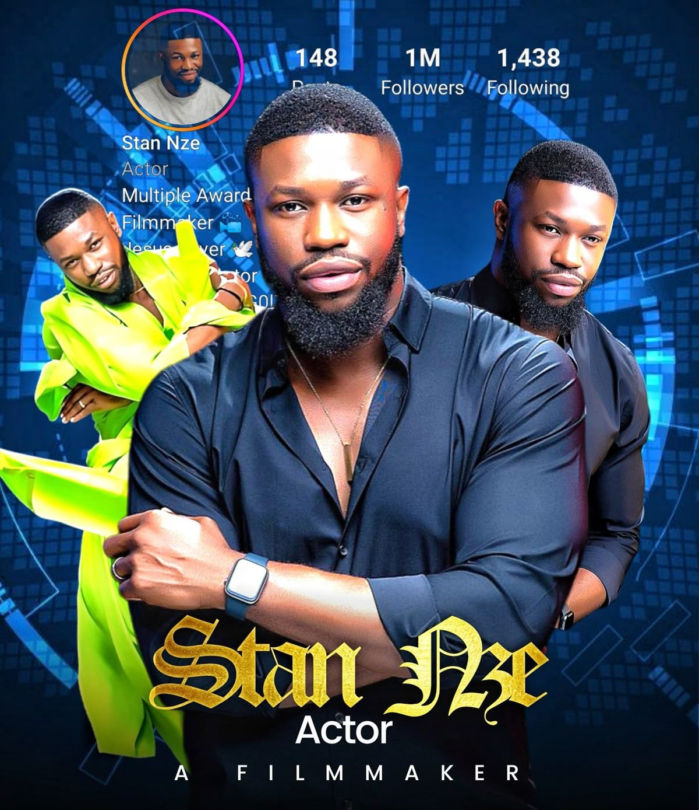
KOL / 明星男性
公众人物样本更偏社媒化与造型完整，发型、胡须、服装和拍摄姿态都更受控。男性样本中可观察到短发、胡须、墨镜、皮衣或西装等更强的形象管理。
基于 KOL、普罗大众、广告模特三类样本，对尼日利亚人物形象进行文档性分析，围绕五官、肤色、发型、服饰装扮、文化、皮肤质感、身材与体型七个维度，建立“典型特征 — 图片证据 — 结论判断”的对应关系。
Research Base
本报告基于对尼日利亚人物图库共 1124 张图片的盘点，其中按来源可确认 KOL / 明星 41 张、普罗大众 41 张、广告模特 / 商业参考 982 张，并包含 60 张混合证据与页面导出辅助素材。图库覆盖社媒人物、生活化街头样本和商业视觉样本三类人群。
Background
PDF 的核心问题是：AI 生图在本地化审美上缺乏标准，容易生成“不对味”的尼日利亚人物，因此需要用真实样本建立可复核的人物形象框架。
Lagos 集中体现尼日利亚的时尚、美妆、音乐、影视和社媒审美。它既有都市商业人物，也有 KOL、娱乐、街头生活和传统视觉符号，因此可作为第一阶段观察入口。
样本按明星/KOL、普罗大众、广告模特三类组织，并进行男女分组观察。七个维度分别记录脸型与五官、肤色色阶、发型、服饰装扮、文化符号、皮肤质感和身材体型。
Sample Map
样本来源图谱展示 KOL / 明星、普罗大众、广告模特三类人群的实际视觉差异：KOL 更精致，普罗大众更生活化，广告模特更标准化。

公众人物样本更偏社媒化与造型完整，发型、胡须、服装和拍摄姿态都更受控。男性样本中可观察到短发、胡须、墨镜、皮衣或西装等更强的形象管理。
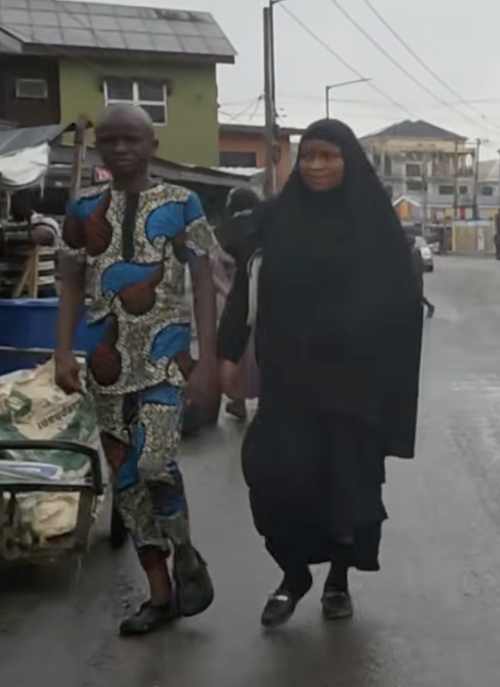
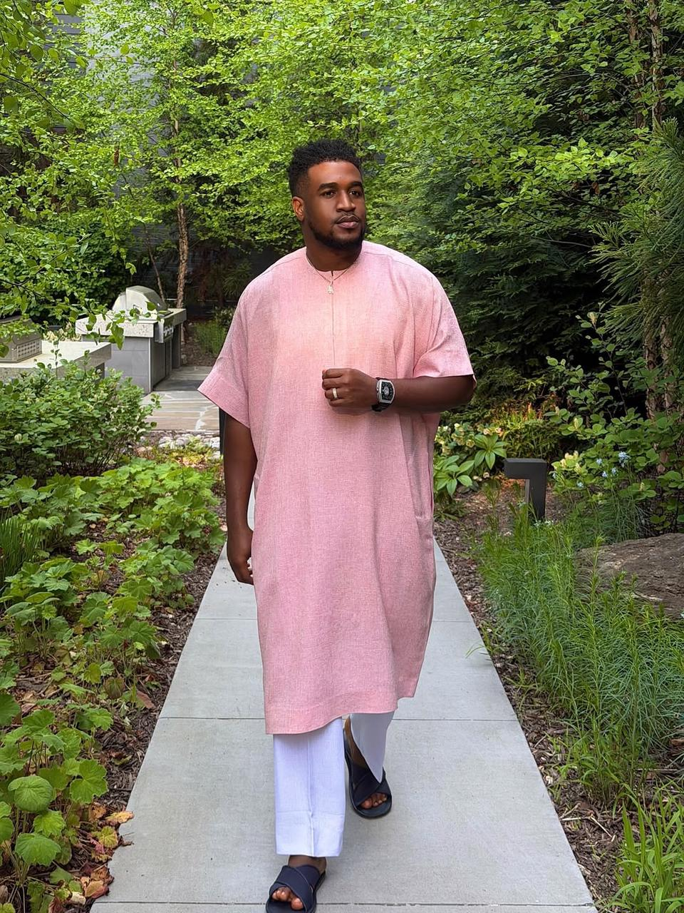
普罗大众男性样本更生活化，服装、姿态和摄影环境保留了街头、市场或新闻现场的自然状态。相较广告模特，表情和构图更少精修控制。
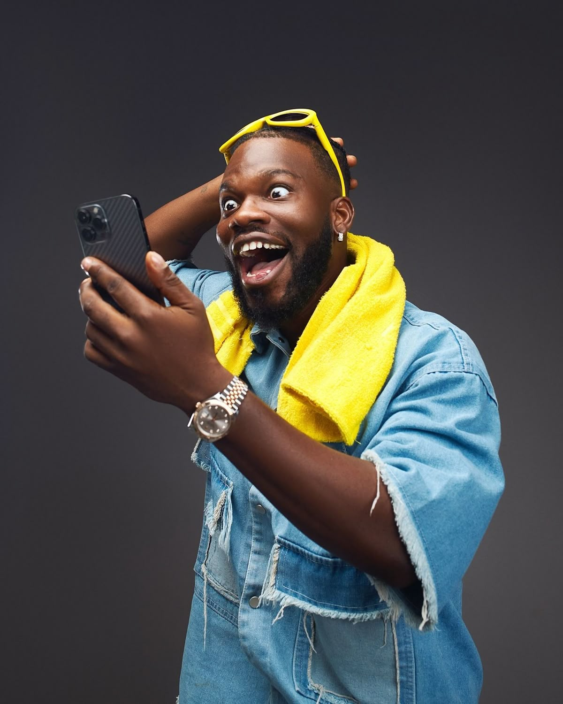
广告男性样本更标准化，常与手机、现金、App 机制或金融服务信息同框。表情和动作更明确，骨相与发型也更容易被商业化整理。
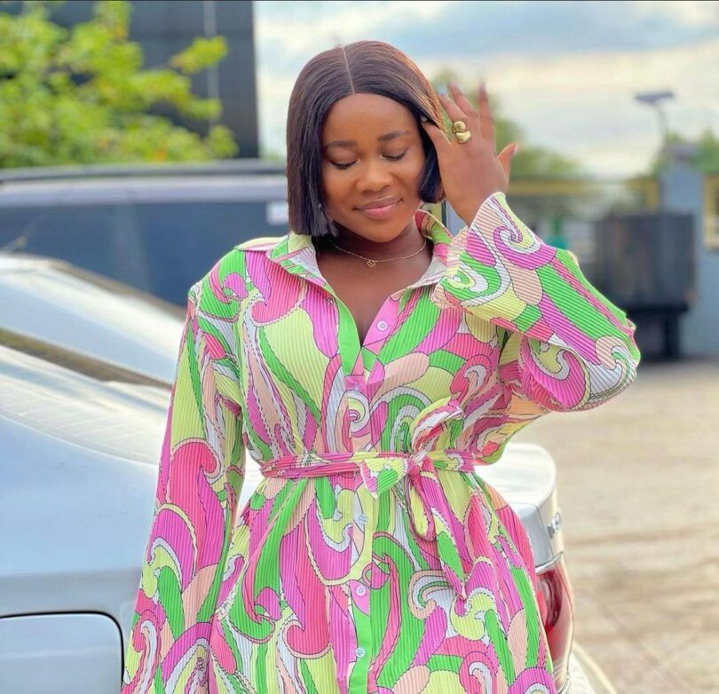
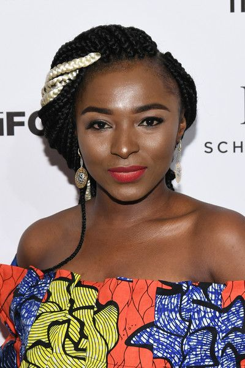
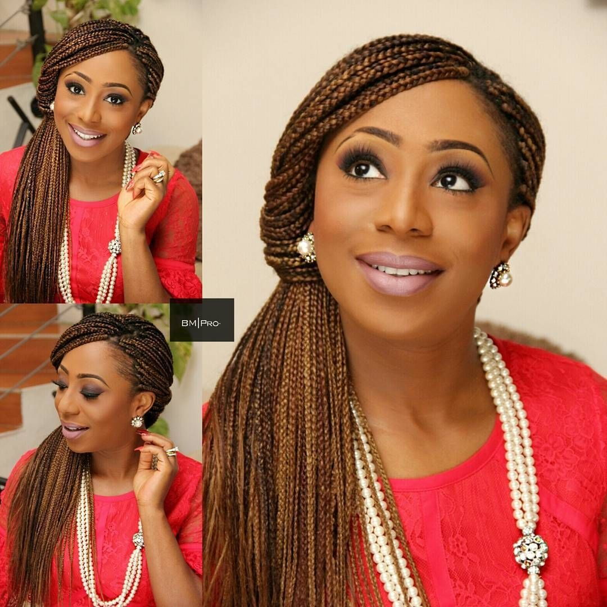
女性 KOL 样本的妆发和服装更精致，假发、长直发、编发、礼服和精修妆面出现频率更高。它们能提供审美上限，但不能替代普通人样本。
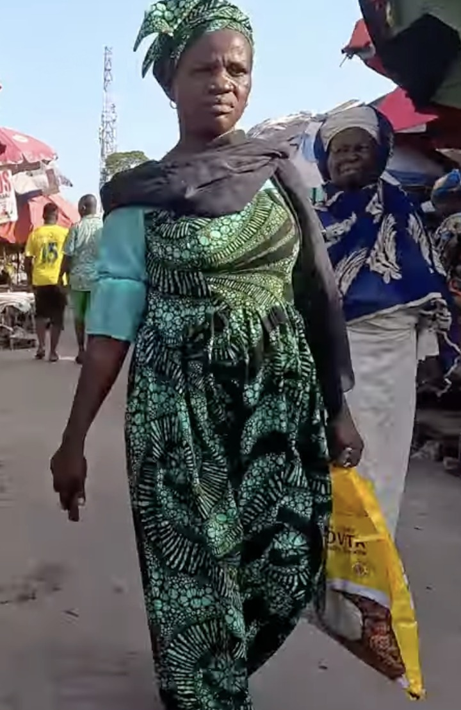
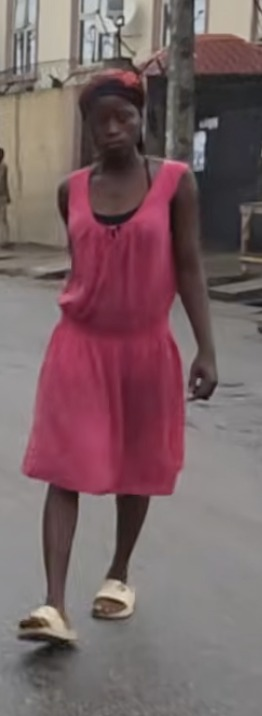
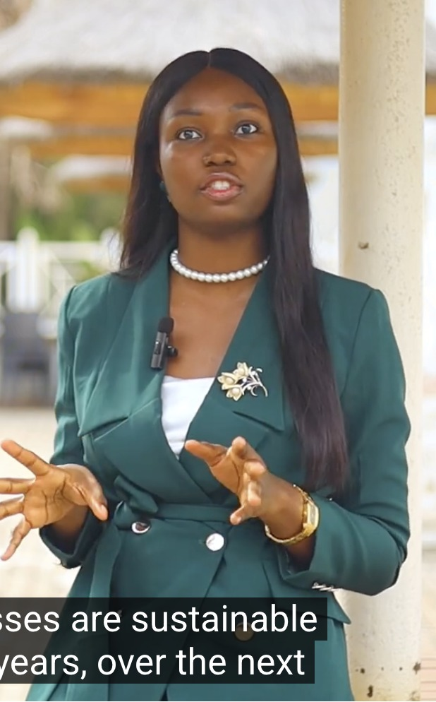
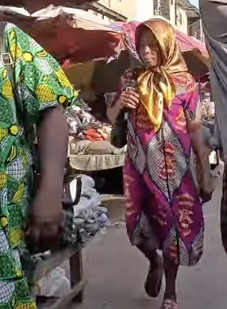
普罗大众女性样本更能观察日常穿衣、头巾、街头行走姿态和真实环境。它们对避免资产库过度 KOL 化非常重要。
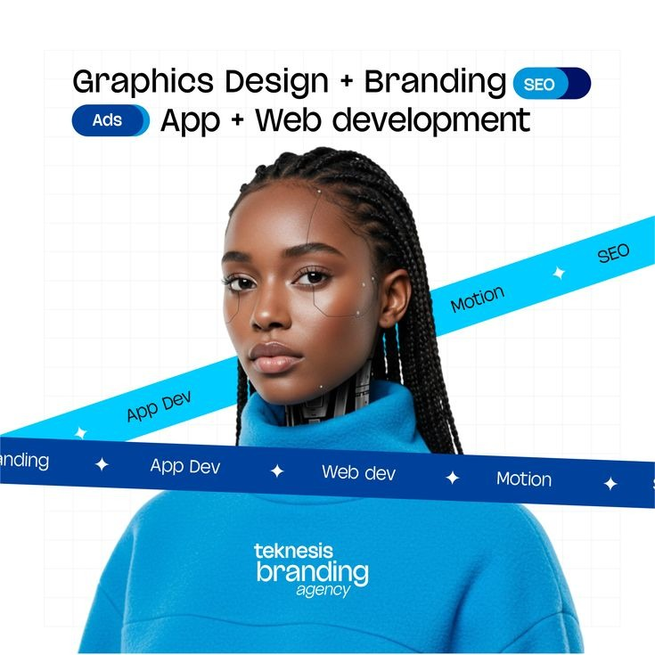
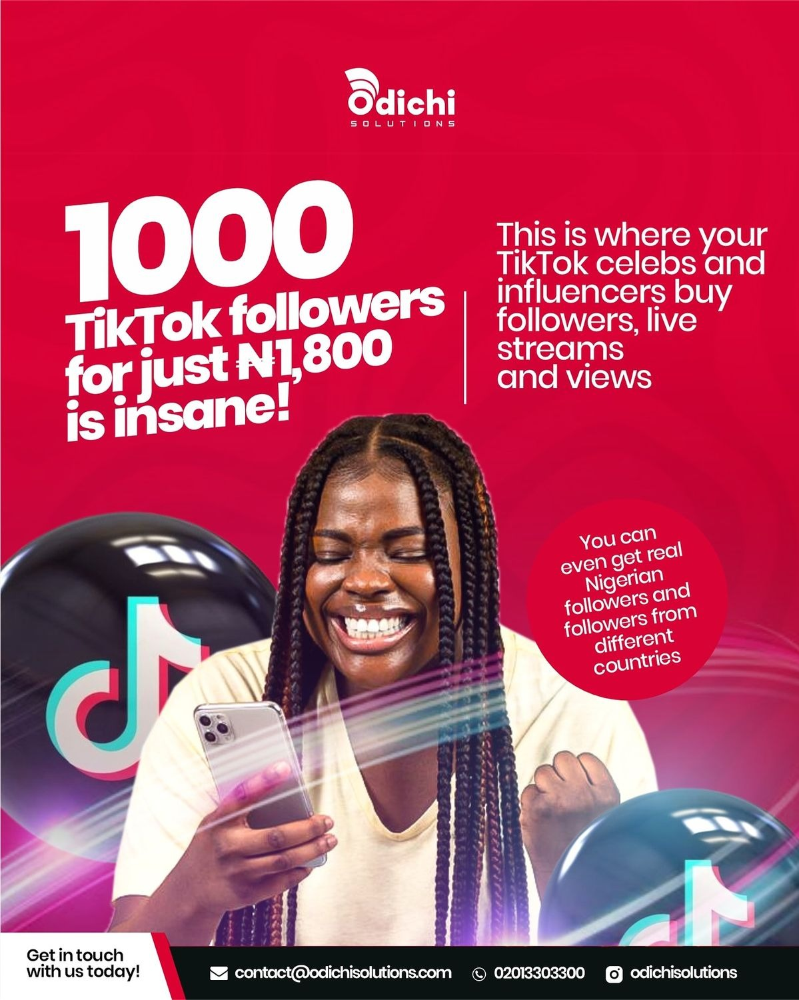
广告女性样本的构图、背景和动作更标准化，常见手机、二维码、明亮色块和亲和表情。它们能帮助观察商业化人物如何处理发型、肤色和姿态。
五套分析最一致的结论是：尼日利亚本地化人物不是“深肤色 + 宽鼻 + 厚唇”的简单标签，而是肤色色阶、真实皮肤反光、发型系统、服饰装扮、都市时尚语境、体型范围与传统元素边界共同构成的视觉体系。
Dimension 1
尼日利亚人物五官呈现清晰骨相与多样脸型并存的特征：椭圆脸、长椭圆脸和方圆脸都可见；鼻翼较饱满、鼻根不过度拔高、唇形饱满是更稳定的跨性别观察点。
清晰骨相是尼日利亚模特组和广告样本中常见的上位结构特征，表现为额头、颧骨、鼻梁、下颌、颈部与肩线之间的轮廓关系清楚，但它不等同于某一种具体脸型。
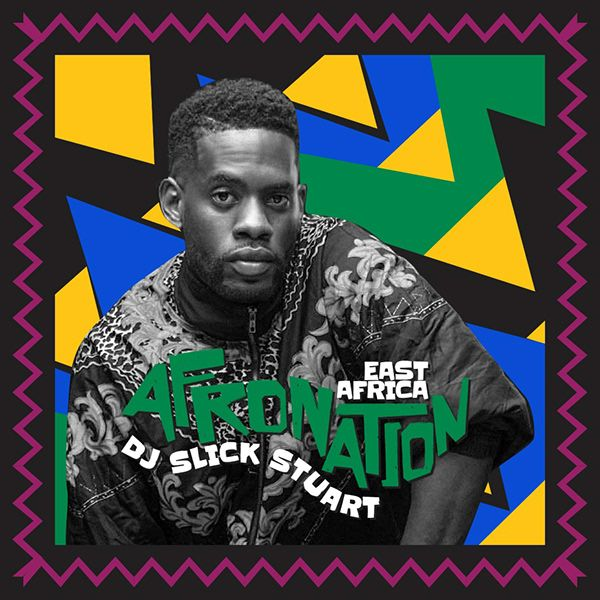
观点说明：广告模特组常更强调骨相、颧骨和脸部明暗关系。男女案例并列后，可以把“清晰骨相”作为上位结构，而不是某一种性别或脸型的专属特征。
图片说明：左图男性样本显示额头、颧骨、鼻梁和下颌的硬朗转折；右图女性样本显示颧骨、下颌和颈肩线条的清晰关系，二者共同支撑模特组骨相清晰这一共性判断。
在骨相基础上再看脸型。椭圆脸、长椭圆脸、方圆脸都可能出现，这是三种可以区分的脸型倾向：椭圆脸更接近鸡蛋形比例，长椭圆脸的纵向比例更明显，方圆脸则强调面部下半区宽度和下颌重量；下颌线、下颌宽度和下颌重量只作为脸型下半部分的补充刻画。
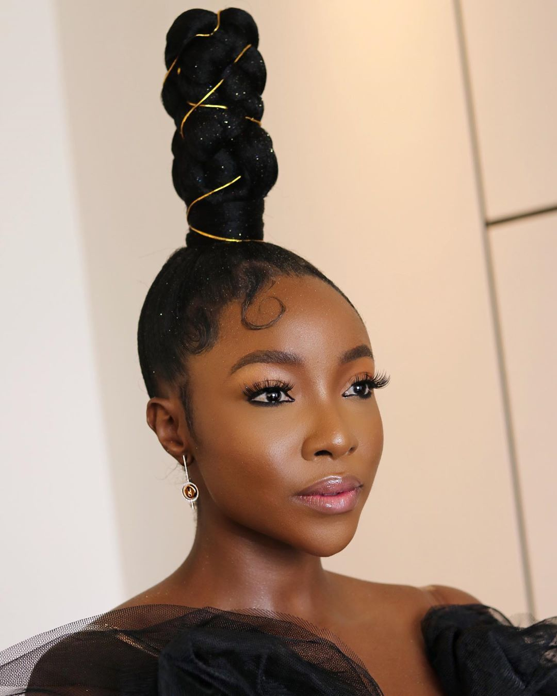
观点说明：椭圆脸的判断重点是额头、颧骨、下颌线条较柔和，整体比例接近鸡蛋形，脸部宽窄过渡顺而不强调纵向拉长。
图片说明：左图男性样本面部轮廓较平顺，额头、颧骨和下颌没有明显棱角；右图女性样本脸部宽窄过渡柔和，可用于支撑普通椭圆脸判断。
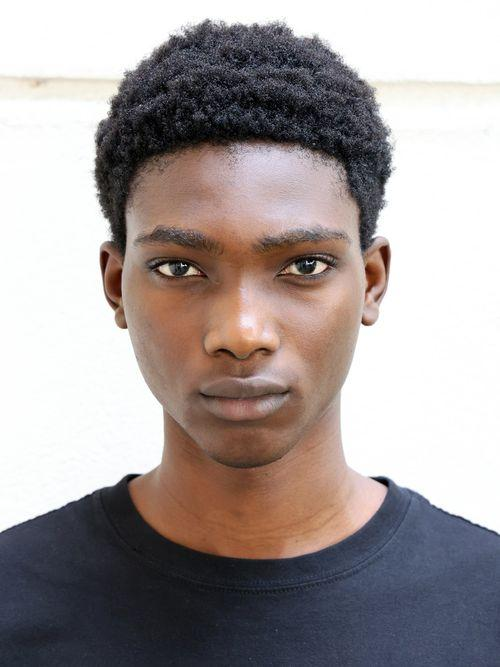
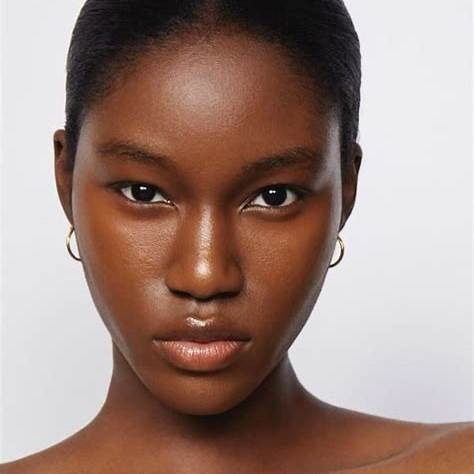
观点说明：长椭圆脸和普通椭圆脸的区别在于脸部纵向比例更长，从额头到下巴的距离更明显，脸宽相对收窄，整体不是单纯柔和轮廓，而是偏纵向拉伸。
图片说明：左图男性样本为正面短发近景，额头到下巴的纵向距离较明显、脸宽相对收窄；右图女性样本同样突出额头、面中和下巴的纵向关系，两者共同支撑长椭圆脸判断。
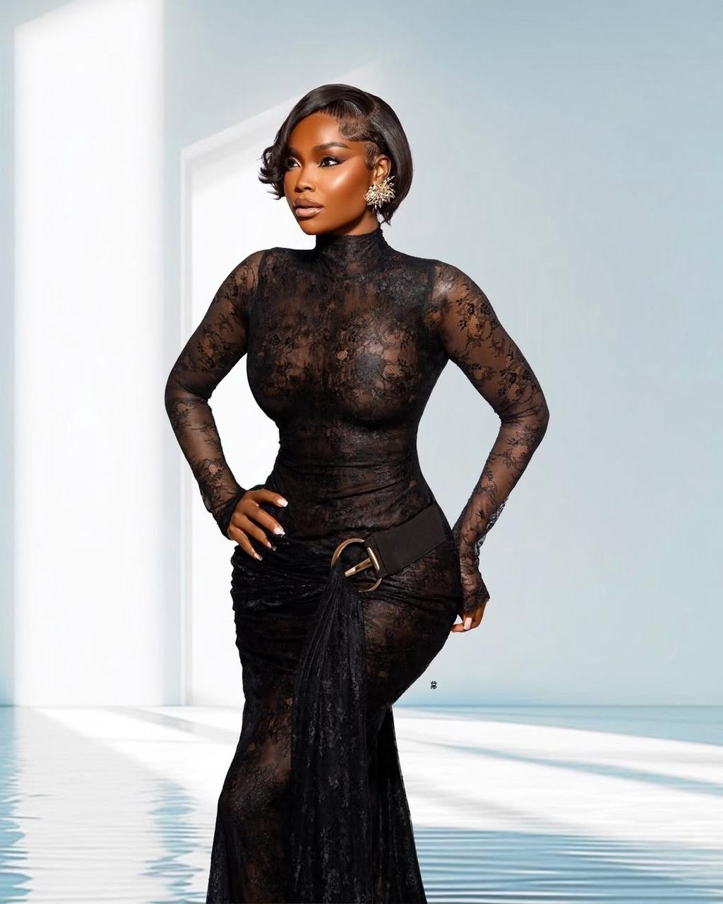
观点说明：方圆脸体现的是面部下半区宽度、下颌重量和整体轮廓的组合。男女案例并列后，可以说明“方圆”是脸型多样性的一部分，而不是只属于男性角色。
图片说明：左图男性样本有较宽的面部下半区和明确下颌重量；右图女性样本以半身造型保留头肩和脸部下半区关系，可观察较饱满的面部轮廓与清楚的下颌边界。
鼻翼和唇形是跨性别的五官共性特征，应单独描述，但仍需避免把它们写成单一刻板脸。
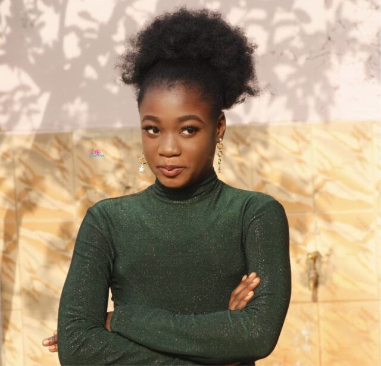
观点说明：多组样本中可见鼻翼相对饱满、鼻根不被过度拔高的特征。男女案例并列后，能把它作为跨性别五官共性，而不是单张男性近景的孤立判断。
图片说明：左图男性样本正面展示鼻根高度、鼻头体积和鼻翼宽度；右图女性样本同样能看到鼻翼饱满与鼻根不过度拔高的关系。
观点说明：饱满唇形在 KOL、广告模特和普通样本中都可见，是比“嘴大”更准确的资产库表达。男女案例并列有助于把它沉淀为五官共性标签。
图片说明：左图男性样本显示上下唇厚度和唇线边界；右图女性样本显示饱满唇面、唇峰和唇部高光，二者共同支撑饱满唇形判断。
Dimension 2
尼日利亚人物的肤色从中棕、浓郁棕到深巧克力色、极深肤色连续分布，不分性别；同一深浅还会出现暖调、中性或偏冷底调差异。高光和光泽属于皮肤表面质感，会在下一维度单独说明。
中棕、浓郁棕、深巧克力、极深肤色与暖调共同构成连续色阶，说明尼日利亚人物肤色不能被简化成单一“黑色”。
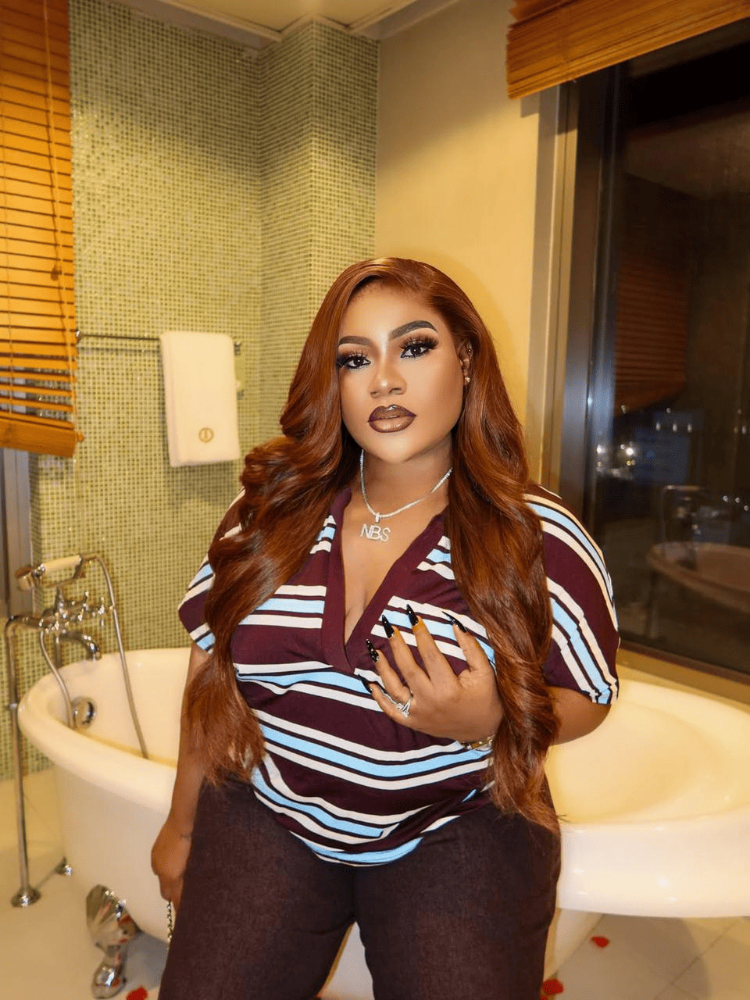
观点说明：中棕肤色在 KOL、普通人和商业样本中都可能出现，说明尼日利亚肤色不能被统一处理为极深色。
图片说明：该样本在暖光环境下仍能看到稳定的中棕肤色色阶，脸部、手臂和胸颈区域的肤色连续，可支撑中棕肤色标签。
观点说明：浓郁棕色常见于精修女性肖像，色调更饱满，和妆面、灯光共同形成社媒审美。
图片说明：该样本面部、颈部和手部呈浓郁棕色，妆面没有抹平肤色层次。
观点说明：深巧克力肤色在商业男性样本中表现稳定，重点是深棕色阶与暖调之间的关系。
图片说明：该样本体现了深巧克力肤色，脸部与额头区域的明暗关系仍保持可读。
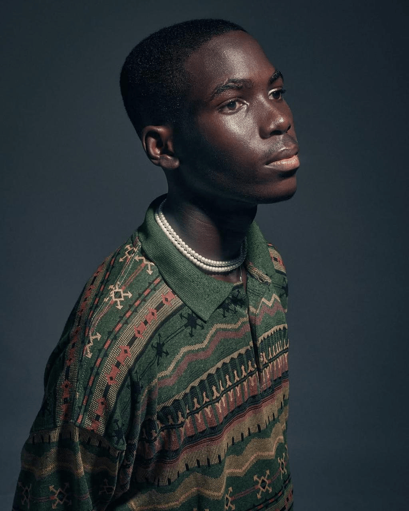
观点说明：极深肤色是连续色阶中的深端，不应被简单处理成无层次的黑色块。
图片说明：该样本呈现极深肤色，额头、鼻梁、面颊和颈部仍保留可读明暗层次，可支撑极深肤色色阶判断。
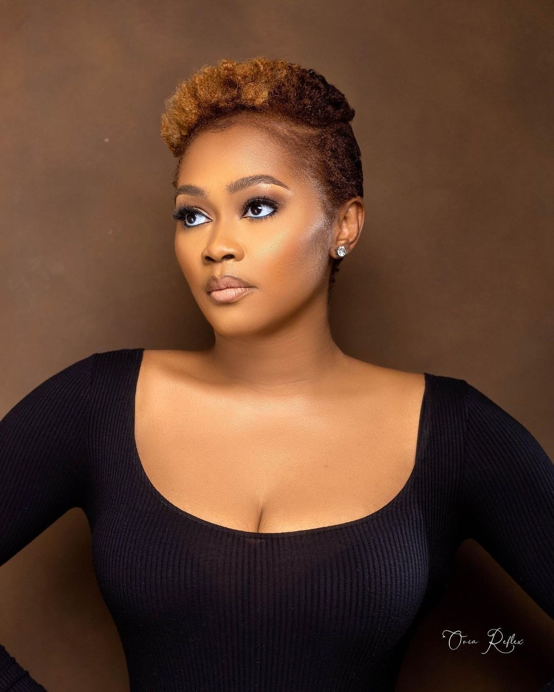
观点说明：同样深浅的肤色也会有暖调、中性或偏冷底调差异，提示词不能只写深浅。
图片说明：该样本脸部与肩颈呈暖棕色调，妆面与灯光共同强化了温暖肤色层次。
Dimension 3
尼日利亚男性发型以短寸、渐变、光头、短辫和清晰发际线为主，胡须打理也需要一起观察；女性样本中假发、长直发、波浪卷、编发和盘发更常见。头巾、Gele、帽子是服饰配饰，不计入发型本身。
男性样本的发型重点集中在可打理毛发结构：短寸、渐变、光头、短辫、清晰发际线和胡须造型共同构成整洁度与身份感。
观点说明：男性广告样本里短自然卷和短寸发型高频出现，通常与清晰发际线共同出现。
图片说明：该样本头发短、卷度自然，发际线清楚，符合年轻男性商业样本常见发型。
观点说明：低渐变短发在数字服务广告男性中可见，侧边收短、顶部保留短发体积，整体比自然短卷更强调边缘修剪。
图片说明：该样本侧边头发收短、顶部保留短卷，发型边界干净。
观点说明：光头在成熟男性和商务男性样本中可见，会让头型和肤色光泽更突出。
图片说明：该样本剃发明显，头部和脸部的肤色反光都较清楚。
观点说明：短辫/脏辫在年轻男性和潮流人物样本中可见，常与街头服饰或广告动作共同出现。
图片说明：该样本头部短辫清晰，搭配格纹外套和手机动作，商业场景识别强。
观点说明：清晰发际线常与短发、低渐变和广告精修共同出现，是男性形象整洁度的重要视觉点。
图片说明：该样本额前发际线清楚，短发边界规整，和笑容、正面姿态共同形成干净形象。
观点说明：胡须是可修剪、可打理的毛发造型，应放在男性妆容体系中理解，而不是重复写成骨相或皮肤质感。
图片说明：该样本胡须边界清楚，和短发、红色上衣一起构成完整男性造型。
女性发型再看假发、接发、长直发、波浪卷、编发、玉米辫和盘发等结构；头巾、Gele 和帽子不放在发型里，统一归入服饰装扮中的配饰。
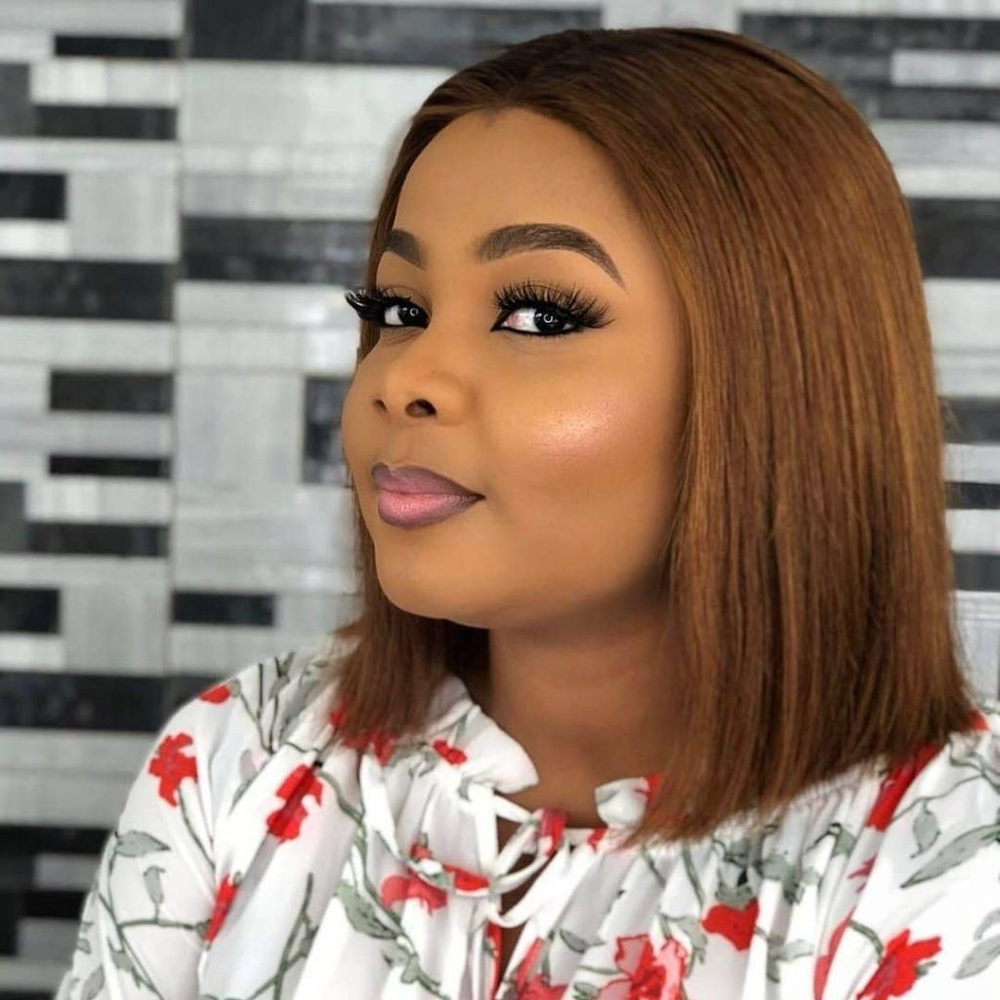
观点说明：女性 KOL 中假发/接发样本较常见，常与精修妆容和社媒肖像共同出现。
图片说明：该样本体现了长直假发、精修妆面和完整的 KOL 肖像风格。
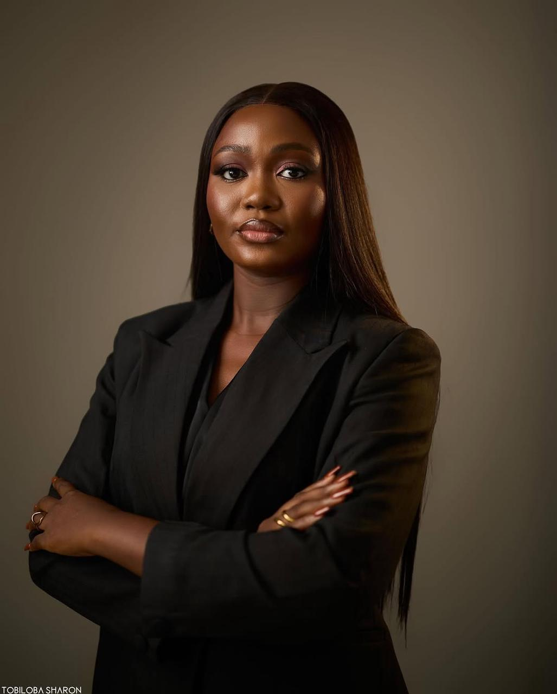
观点说明：长直发在女性明星/KOL样本中较明显，通常伴随妆容、首饰和干净背景。
图片说明：该样本头发从中分位置自然垂落，发丝顺直并延伸到肩部以下，长度和直发结构完整可见，可支撑长直发标签。
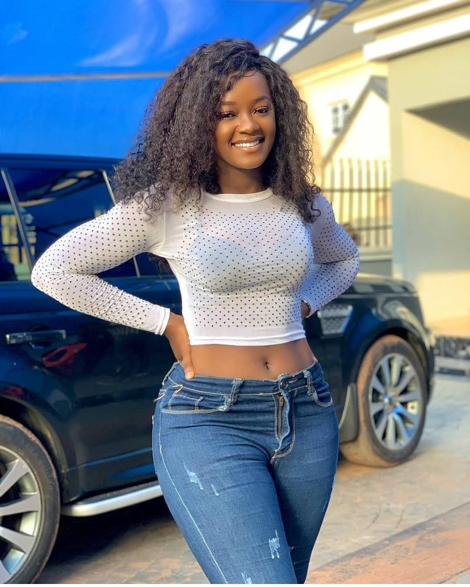
观点说明：波浪卷在女性 KOL 和明星样本中可见，通常与精修妆面、礼服或社媒姿态共同出现。
图片说明：该样本发型有明显波浪卷度，并与精修妆面和时尚服装共同构成 KOL 造型。
观点说明：编发在女性 KOL、明星和日常样本中都可见，造型变化多，需要独立成类。
图片说明：该样本长编发清晰，发束和发际线处理都很明显。
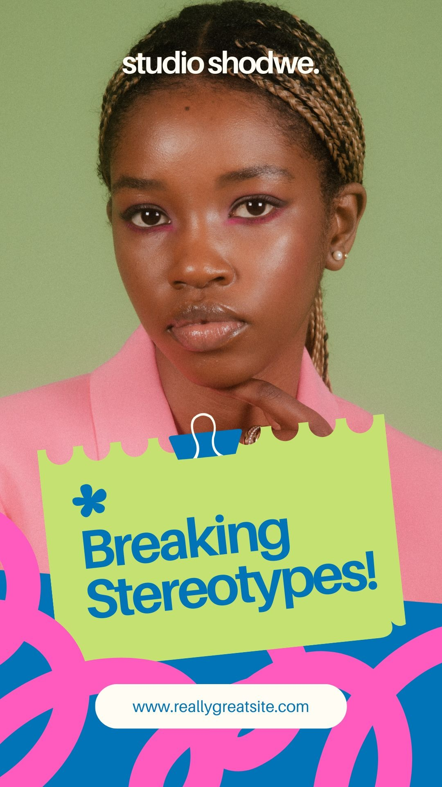
观点说明：玉米辫/贴头辫需要头部线条清晰的证据图，现有样本中可见贴头分区编发。
图片说明：该样本头部编发贴近头皮，分区线条比普通散辫更明确。
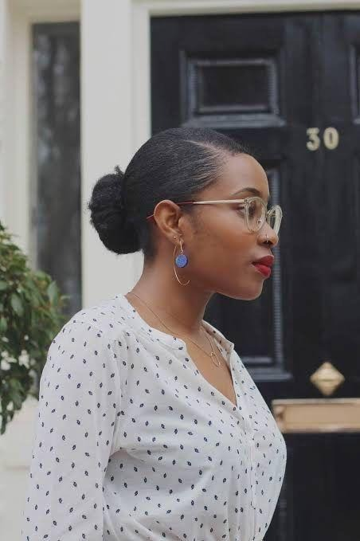
观点说明：盘发在精修女性样本中可见，会把脸型、额头和妆面完全露出。
图片说明：该样本从侧面完整展示后脑低盘发、顺滑发面、发际线和颈部关系。
Dimension 4
尼日利亚人物服饰会随城市日常、街头运动、商务、传统庆典和礼服场景明显变化；头巾、Gele、帽子、首饰、墨镜和包袋会强化身份与场景语气，但不应脱离场合默认添加。
都市日常、街头运动、商务、传统、礼服/派对等场景会直接改变服装廓形、色彩和材质；Ankara 印花更像传统或市场日常语境中的图案线索。
观点说明：都市日常样本服装更简单，姿态自然，和 KOL 礼服、广告造型差异明显。
图片说明：该样本是街头行走状态，粉色连衣裙和运动鞋构成生活化穿着。
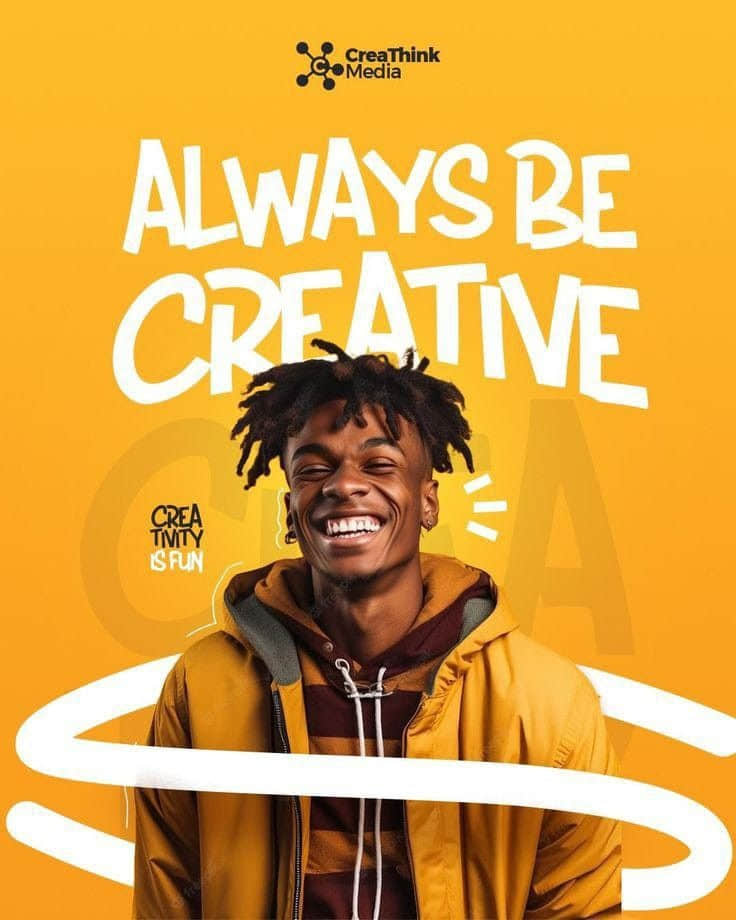
观点说明：街头/运动风在年轻男性广告和社媒样本中可见，常伴随帽衫、T 恤或轻运动单品。
图片说明：该样本黄色帽衫、自然卷发和活跃姿态共同体现街头年轻感。
观点说明：商务正式样本常见西装、衬衫或更克制的姿态，与街头和 KOL 造型区分明显。
图片说明：该样本穿着结构化绿色西装外套，搭配白色内搭、珍珠项链和胸针，整体呈现清晰商务正式形象。
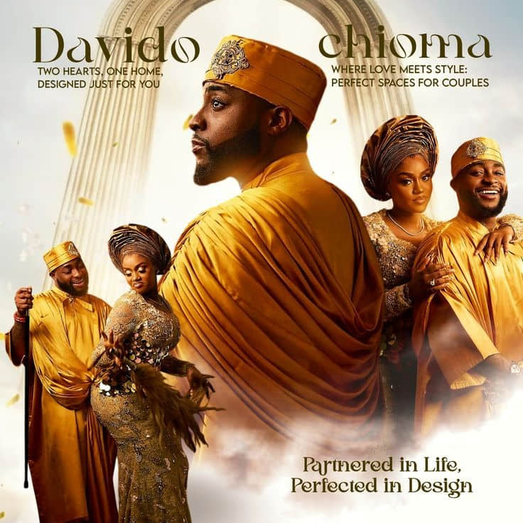
观点说明：传统长袍在影视、文化和正式图像中可见，廓形和头饰是主要判断线索。
图片说明：该样本以金色长袍、帽饰和群像构成 Agbada/Kaftan 类传统服饰证据。
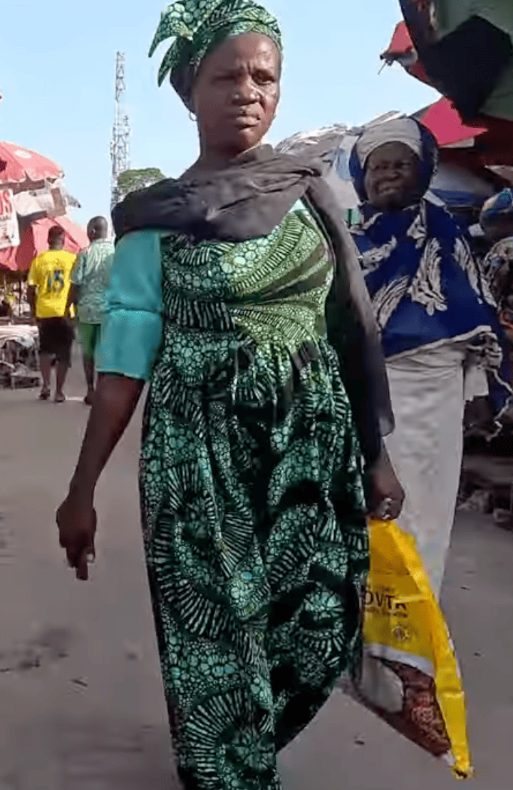
观点说明：Ankara 不作为和商务、街头平级的场景类别，而是传统/市场/庆典语境里的印花图案线索。
图片说明：该街拍样本保留了绿色印花服装、头巾和真实街头环境。
这里的派对指社交聚会、庆典、发布会、红毯或重要活动。同一场合下，网红/名流会更强调礼服、妆发和精修姿态，普通人则更可能保留生活化和功能性穿着。
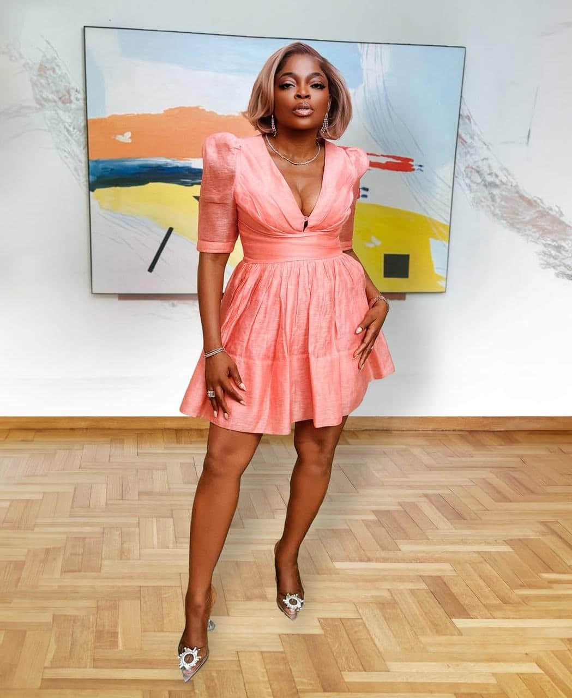
观点说明：在社交聚会、庆典或发布会语境中，KOL/名流样本会用礼服、鞋履、妆发和姿态制造更强社媒识别。
图片说明：该样本完整展示粉色礼服、鞋履、首饰、妆发和全身姿态。
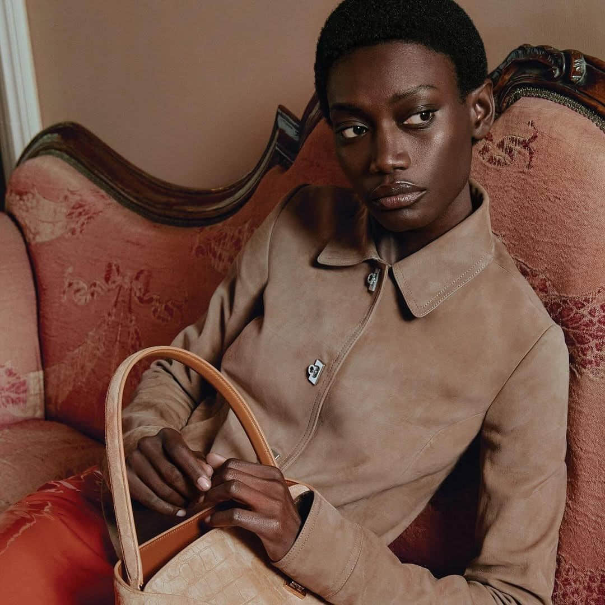
观点说明：高端广告模特更强调面料、剪裁、克制色彩和姿态控制，与普通派对装区分明显。
图片说明：该样本展示极简外套、包袋、克制色调和模特化姿态，服装主体完整可见。
头巾、Gele、帽子、首饰、墨镜和包袋都归入配饰层；它们会改变人物身份和场景语气，但不属于发型本身。
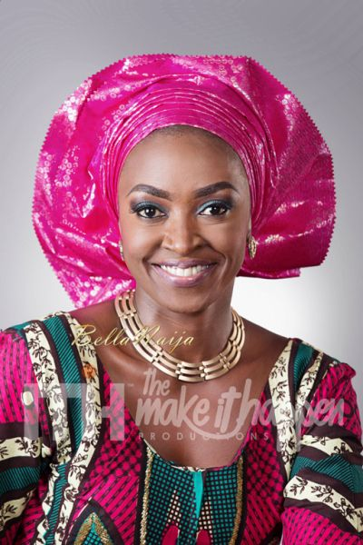
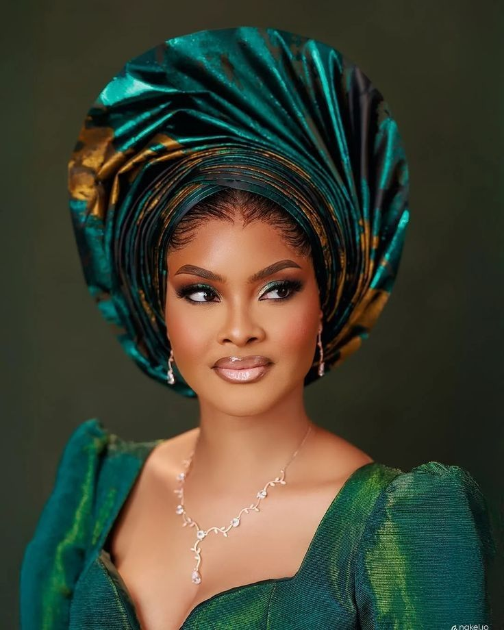
观点说明：Gele 是传统、婚礼和正式庆典场景中识别度很高的头饰配件，通常与妆面、珠饰和传统服饰共同出现；它应归入配饰/庆典造型，而不是发型，也不能默认加到日常人物上。
图片说明：左图保留服装、珠饰和庆典场景关系，右图突出 Gele 头巾本身的体量、褶皱和配饰属性，两张图共同说明 Gele 的场景边界与配饰归类。
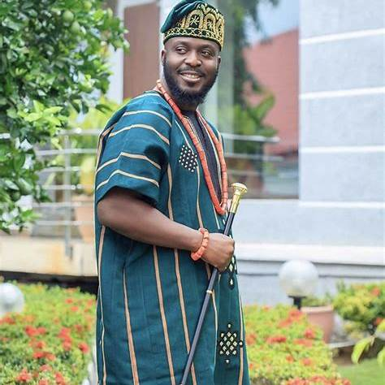
观点说明：Fila 帽是尼日利亚男性在传统、庆典和正式场合中识别度很高的头饰，通常与传统长袍（Agbada/Buba）、珠饰共同出现，是配饰层面的元素，不属于发型本身。
图片说明：该样本展示 Fila 帽的造型、色彩与传统长袍、珠饰的搭配关系，可支撑 Fila 帽作为男性庆典配饰的判断。
观点说明：配件在广告、音乐视觉和 KOL 图像中强化身份感，常见墨镜、首饰、包袋或帽饰。
图片说明：该样本同时呈现墨镜、耳饰、手表、戒指、项链和亮面服装细节，可支撑造型配件强化人物身份感的判断。
Dimension 5
尼日利亚人物视觉常受 Lagos 都市审美、Afrobeats 音乐视觉和 Nollywood 影视人物感影响；红帽、珠饰、婚礼庆典、彩绘和疤痕等文化符号具有明确场景边界，不能作为普通人物默认配置。
Lagos 都市环境、音乐视觉和影视人物感共同塑造尼日利亚人物的现代文化语气，和传统庆典符号形成不同层级。
观点说明：Lagos 都市审美不仅来自人物，还来自街道密度、交通、市场和城市色彩。
图片说明：该样本展示了拥挤街道、黄色车辆和城市流动感，是人物之外的都市语境证据。
观点说明：Afrobeats/音乐视觉常通过墨镜、强色彩、活动海报、夸张姿态和潮流服装体现。
图片说明：该样本以音乐活动海报、墨镜、帽饰和高饱和背景构成音乐视觉线索。
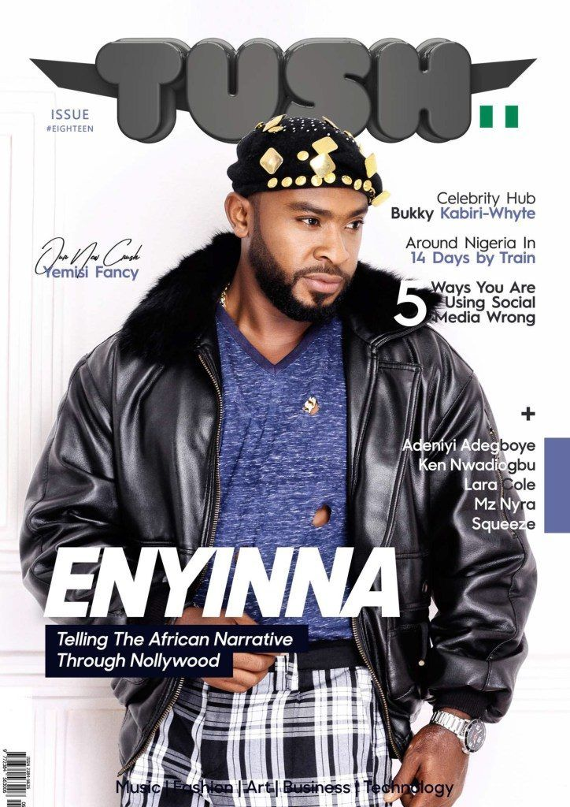
观点说明：Nollywood/影视人物感通常通过演员海报、戏剧化灯光、人物身份和叙事构图体现。
图片说明：该样本是演员视觉海报，人物姿态、背景和文字都具有影视宣传感。
红帽、珠饰、婚礼庆典、彩绘/疤痕等是文化符号或特殊场合符号，需要场景化使用，不能默认加到所有人物身上。
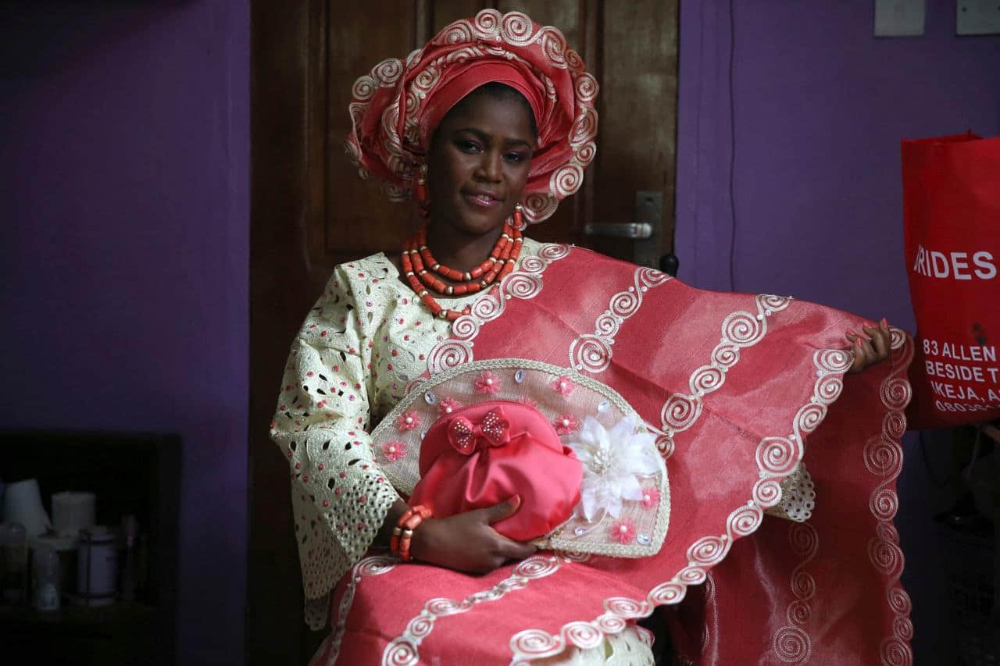
观点说明：红帽和珠饰属于身份与传统场合符号，适合作为文化元素记录，但不作为普通人物默认配置。
图片说明：该样本展示头饰、珊瑚珠项链与手串，以及成套传统庆典服饰，可用于支撑珠饰与传统装扮判断。
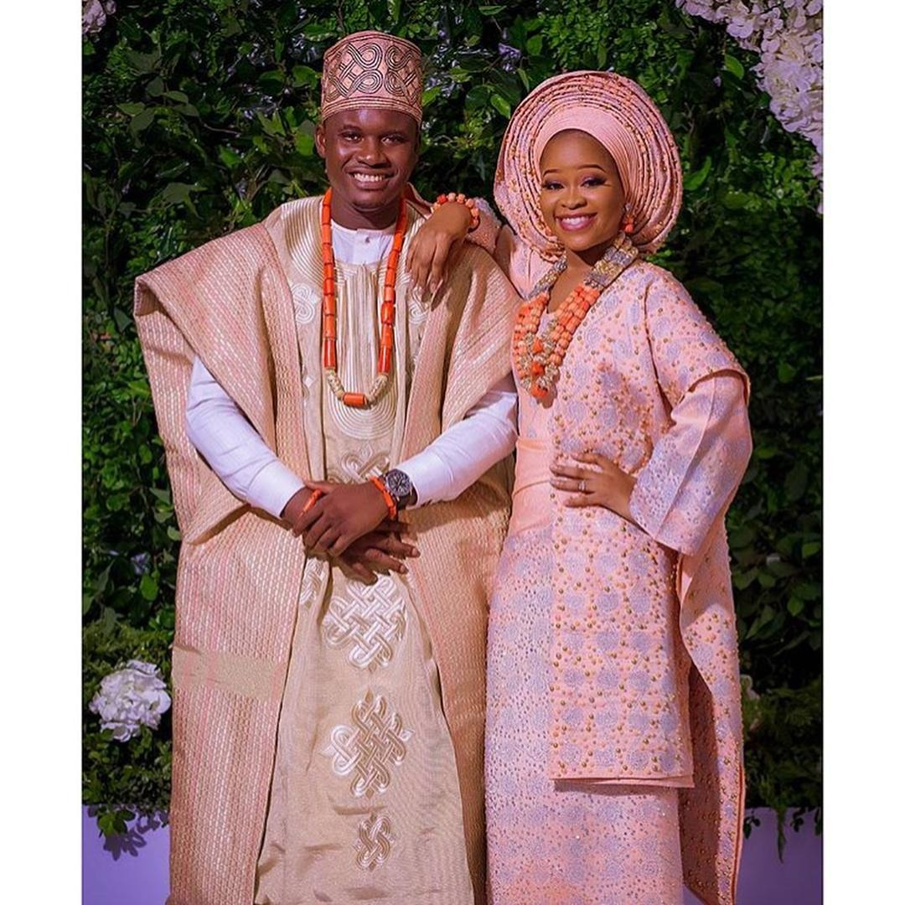
观点说明：庆典感通常由正式姿态、传统服饰、配饰、场地和色彩共同构成。
图片说明：该样本通过双人正式姿态、Gele、传统帽饰、珊瑚珠饰和成套服饰体现婚礼/庆典感。
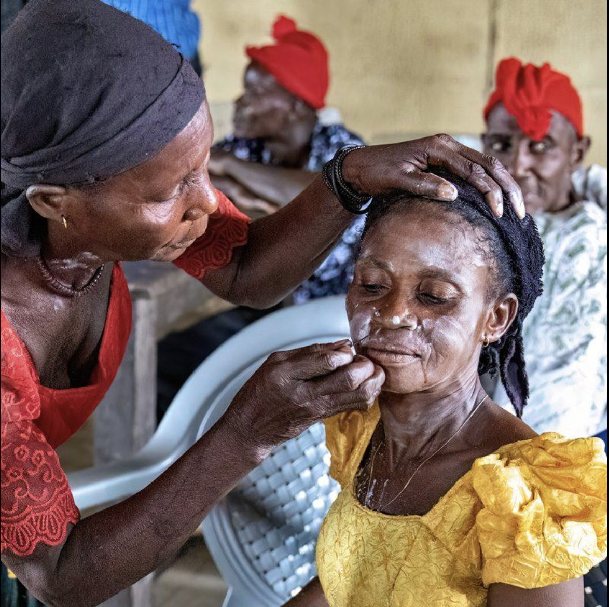
观点说明：部落疤痕/彩绘应作为特殊文化元素，不得作为普通尼日利亚人物默认特征。
图片说明：该样本在脸颊、额头、颈部和胸前清楚展示白色彩绘/身体标记。
Dimension 6
尼日利亚人物皮肤表现的关键不是磨平，而是保留可见肤质、毛孔、痘印、唇纹、自然光泽和局部色素差异；深肤色尤其依赖额头、鼻梁、颧骨和肩颈的真实反光来保持结构可读。
可见纹理、毛孔、痘印、唇纹和精修层次共同决定皮肤真实度；自然光泽让深肤色的五官和骨相保持可读。
观点说明：真实人物肤质不是单一塑料面，精修或妆容场景下也应保留局部纹理和表情细节。
图片说明：该样本在妆容和头饰场景下仍能看到额头、眼周、鼻部和脸颊的皮肤纹理与表情细纹，可支撑可见肤质标签。
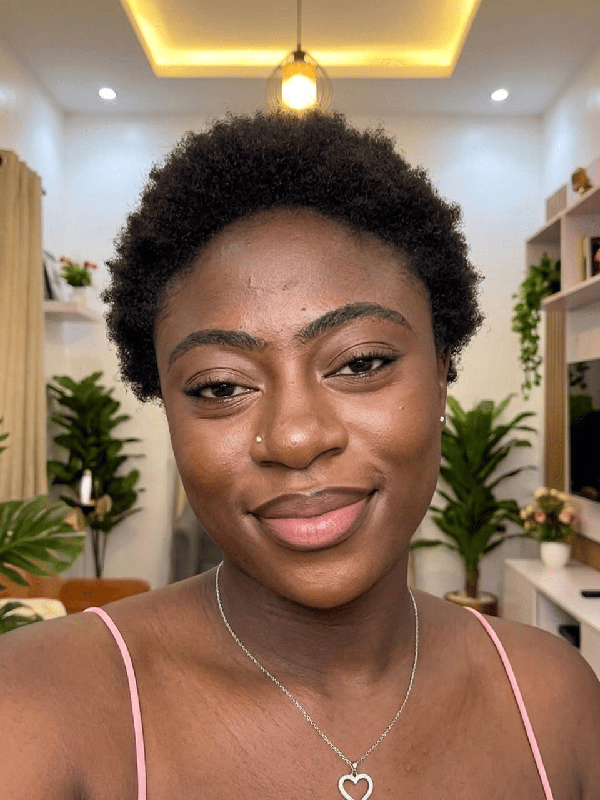
观点说明：自然毛孔和细微纹理在近景中更容易判断，是防止 AI 生成塑料皮的关键。
图片说明：该样本为近距离自拍式人像，额头、鼻部和脸颊区域保留毛孔、细小斑点和自然纹理，可支撑自然毛孔标签。
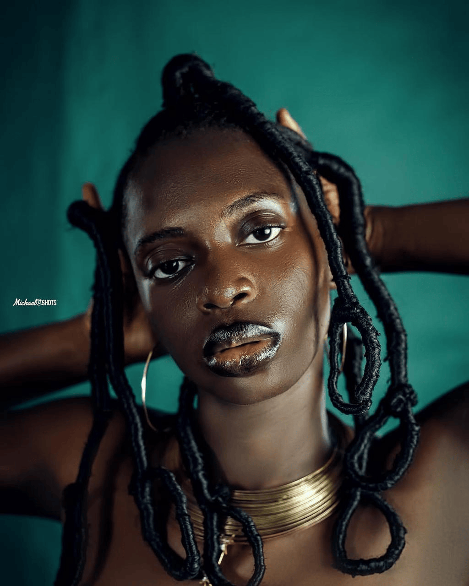
观点说明：补充图提供了清晰近景，可观察到面部细小痘印、肤色不均和真实皮肤纹理。
图片说明：该样本为近景人像，额头、面颊和鼻部周围可见细小痘印、肤色不均和真实皮肤纹理，可直接支撑“痘印 / 小瑕疵”标签。
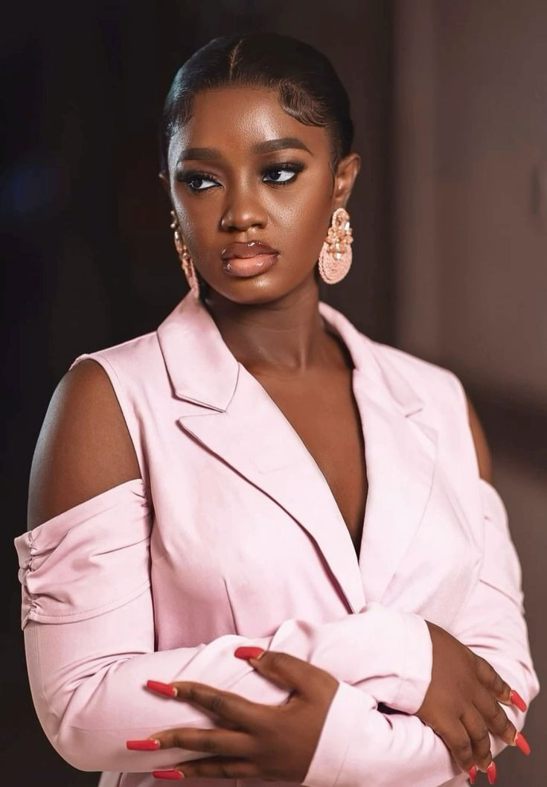
观点说明：唇纹和唇面高光能让饱满唇形更真实，避免生成过度磨平的塑料唇。
图片说明：该样本唇部较清晰，可观察到唇面高光、唇线和细微纹理。
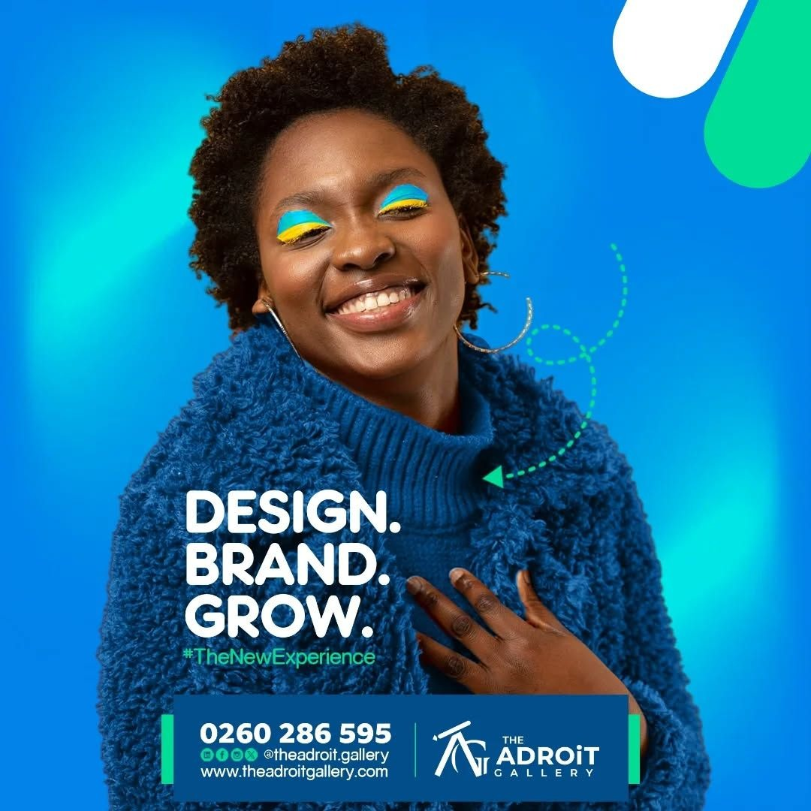
观点说明：广告和 KOL 样本可以精修，但仍应保留深肤色高光、发型边界和脸部层次。
图片说明：该广告样本经过商业处理，但脸部高光、肤色层次和自然卷发仍然可读。
非洲人肤色的视觉重点是自然光泽感的保留，而非人为高光叠加。高光不是孤立审美偏好，而是让深肤色五官、颧骨、鼻梁和肩颈结构保持可读的必要信息。
观点说明：深肤色和中深肤色都需要自然高光来保留体积，常见位置包括额头、鼻梁、颧骨和肩颈。
图片说明：该样本在额头、鼻梁、脸颊和肩颈处保留了明显但不过曝的自然光泽。
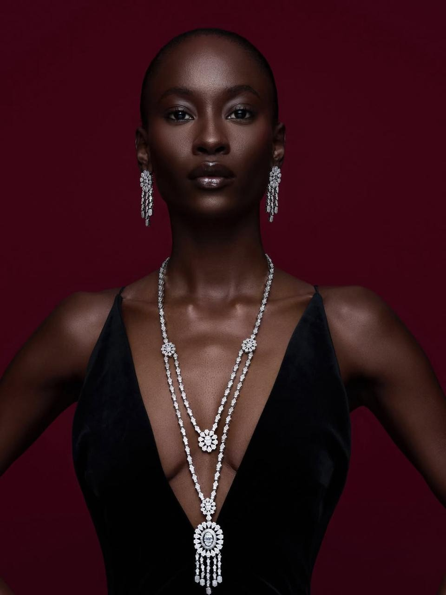
观点说明：该标签需要同时看到脸部和肩颈区域；自然高光帮助深肤色人物保留五官和身体结构。
图片说明：该样本在额头、鼻梁、颧骨、肩颈和锁骨区域都有可读高光。
观点说明：轻微油光常出现在额头、鼻梁和颧骨区域，与深肤色高光共同形成真实感。
图片说明：该样本额头和鼻梁有轻微油光，妆面精修但没有完全抹平反光。
观点说明：深肤色需要局部高光和暗部层次来保持五官可读性。
图片说明：该样本深肤色脸部在额头、鼻梁和面颊处保留可读高光。
色素不均和身体部位差异需要独立保留，例如手心、脚心、眼白、牙齿、唇部和脸部之间的颜色差异。
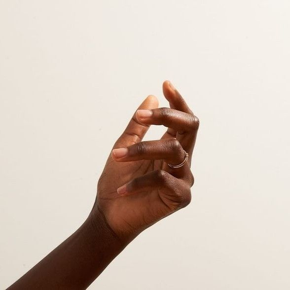
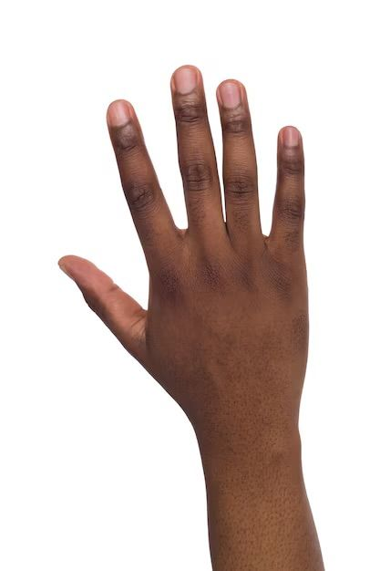
观点说明：手心、手背、指节、指尖和腕部之间会出现自然色素差异，这类局部变化比单一肤色块更能体现真实皮肤。
图片说明：左图展示手心与手指外侧的明暗差别，右图展示手背、指节和指尖之间的色素层次，可用于补充局部色素差异证据。
Dimension 7
尼日利亚人物体型呈现明显多样性，高挑修长、丰满曲线和普通职业体型都应进入资产库；KOL/模特样本更强调姿态和比例，普通职业样本更接近日常身份表达。
尼日利亚人物资产库需要覆盖高挑、丰满、普通体型和不同年龄/职业状态，不能只保留单一瘦高或模特化身材。
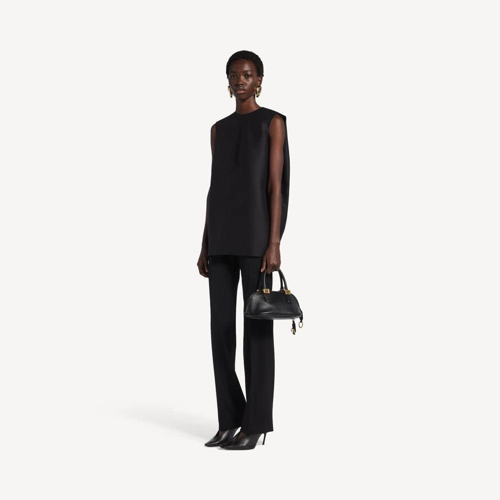
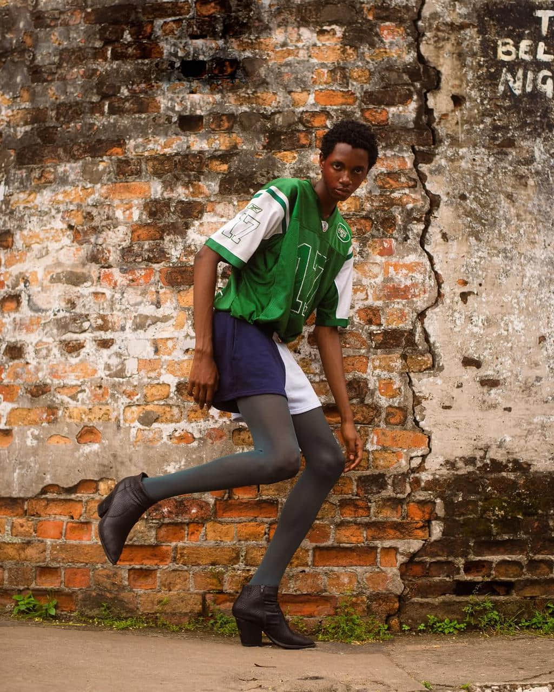
观点说明：高挑修长体型不只出现在礼服或精修 KOL 图中，也可以通过极简套装、街头球衣等不同造型呈现，关键是四肢比例、身体纵向线条和姿态控制。
图片说明：左图以黑色套装完整展示细长四肢和垂直廓形；右图以绿色球衣造型展示更街头化的修长比例和动态姿态。
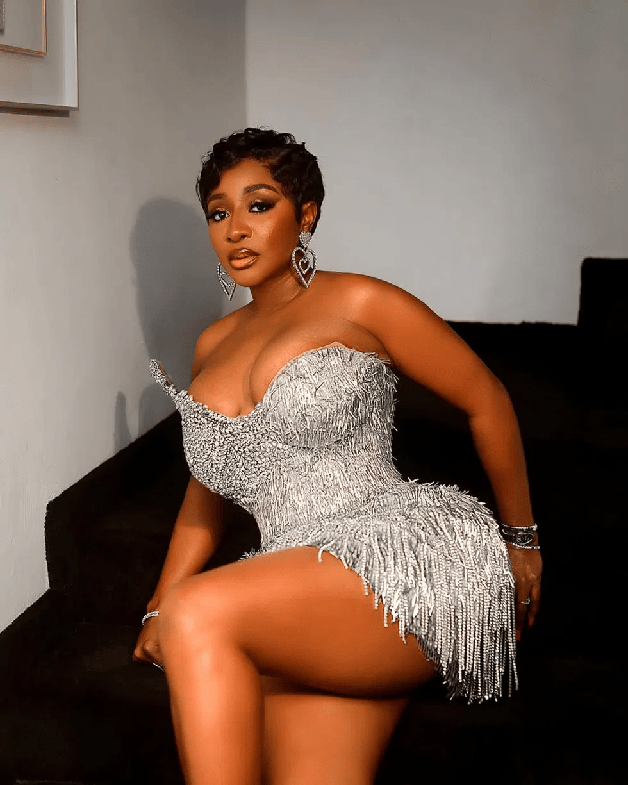
观点说明：丰满和曲线体型同时存在于男性与女性样本中：男性更多表现为肩胸、手臂和躯干厚度，女性则更强调胸腰胯曲线和礼服包裹后的体量感。
图片说明：左图男性黑色套装完整展示较厚实的上身、手臂和腿部比例；右图银色亮片裙突出胸腰胯曲线和坐姿下的身体体量。
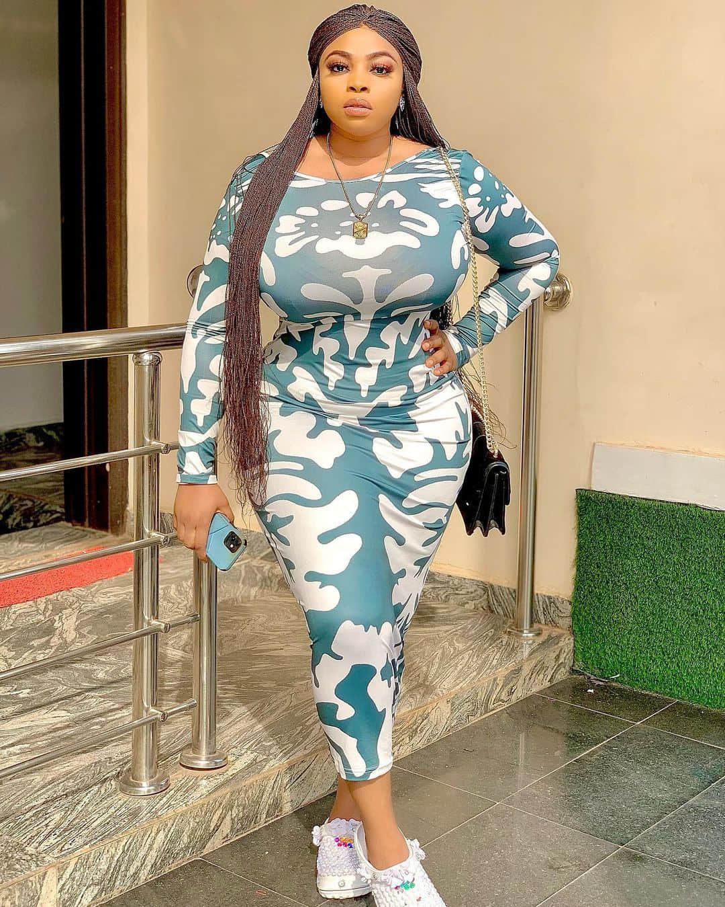
观点说明：普通职业或正式身份样本更接近日常社会角色，身体表达服务于职业、仪式或身份语境，而不是模特化展示。
图片说明：左图以半身商务站姿呈现自然肩线和上身比例；右图男性样本以传统正式服饰呈现完整站姿和常规体型，可补充男性普通职业/正式身份案例。
Final Findings
以下总结用于后续 prompt 标签词库、LoRA 素材库和本地化人物标准沉淀，不进入具体广告投放判断。
尼日利亚人物肤色不是单一黑色，而是覆盖中棕、暖棕、深棕、黑棕到乌木色的连续色阶。判断肤色时不能只看深浅，还要观察底调、光照、高光、肤质纹理和样本类型差异。图一用于展示尼日利亚人物肤色的完整色阶范围；图二用于补充常见深肤色与底调参考。两张图共同说明：尼日利亚人物肤色不能被单一化处理，后续 Prompt / LoRA / 人物资产库标注应同时关注色阶、底调、光泽与肤质层次。
展示从浅琥珀、蜂蜜棕、焦糖棕、可可棕到乌木色的完整肤色跨度，用于说明尼日利亚人物肤色具有明显连续性和多样性。
集中展示较常见的深肤色、暖金底调、中性底调、暖古铜底调等，可作为深肤色层次、底调和高光表现的补充参考。